OSU Extension Master Gardeners
Explore OSU Extension’s gardening education as a resource for plant science, mentorship and community learning. No Rooted partnership is confirmed.
Explore OSU Master Gardeners ↗Rooted Futures / A living landscape of possibility
Growing, making, caring, exploring. A place for curiosity to find meaningful work—and for every learner to find room to belong.
Follow the water ↓An evolving vision. Ideas are labeled by their current stage.
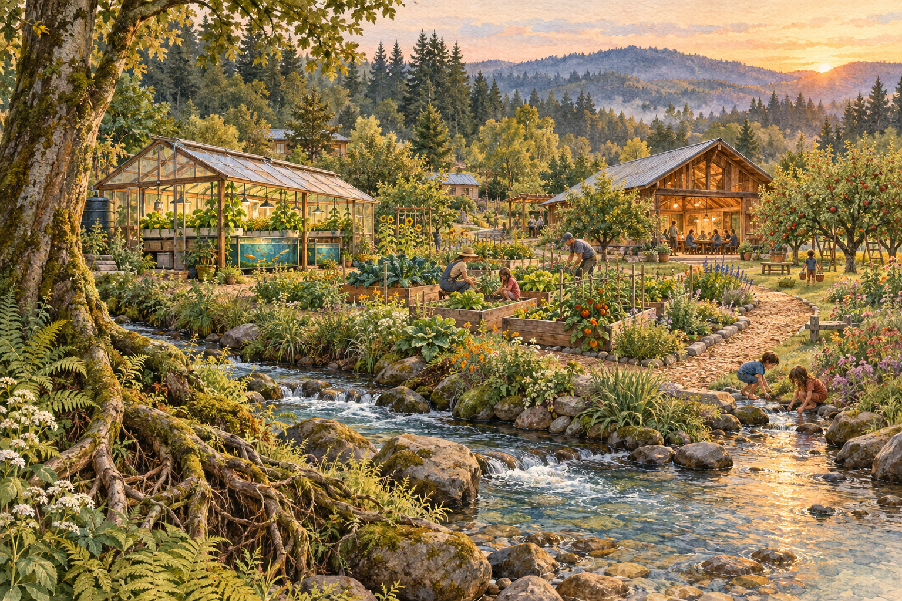
01 / Roots
What if learning began with curiosity—and the world became the classroom?
Strong foundations in literacy, mathematics, science and communication can grow alongside gardens, kitchens, workshops and community projects. Experiences help people discover interests before being asked to choose a direction.
A stream can branch, join another, or end. Discovering that something is not for you is a valuable learning outcome, too.
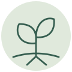
Begin with something to try: grow a seed, make a meal, build a tool.
What was interesting? What felt difficult? What would you change?
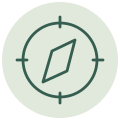
Explore further, combine interests, or try another stream.
The learner’s response helps shape the route. Changing direction is a useful discovery.
02 / Water → Branching paths → Experiences
Choose a stream to explore its ideas. Every path can reconnect through shared learning and contribution.
Roots feed the water
Experiences come together
Confluence → Contribution ↓03 / A living research scrapbook
Inspiration · a possibility Research · investigating fit Planned · a draft next step Approved · permission and a documented decision.
No project approval, partner commitment, property purchase or enrollment is confirmed in the material available to this hub. “Planned” describes draft design work, not permission to launch.
No discoveries match. Try another search or stage.
Stream 01
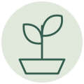
Explore plants, soil and gardening knowledge; investigate OSU Extension resources.
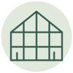
See how a grower manages space, seasons, water and daily care.
Notice how tools, design and problem-solving connect to the growing system.
Bring back sketches, questions and one small experiment to try.
Illustrative stops only. Hosts, partnerships, access arrangements and visits are not confirmed.
Explore OSU Extension’s gardening education as a resource for plant science, mentorship and community learning. No Rooted partnership is confirmed.
Explore OSU Master Gardeners ↗A proposed tour network could include farms, greenhouses, aquaponics growers, community gardens, food enterprises and makers. These are potential host categories, not booked visits.
A draft eight-week pathway connects food production, systems thinking and student-led improvements. IFAD resources are an inspiration; this is Rooted’s own concept, with no IFAD affiliation or endorsement.
Walk through the eight weeks ↓Stream 02
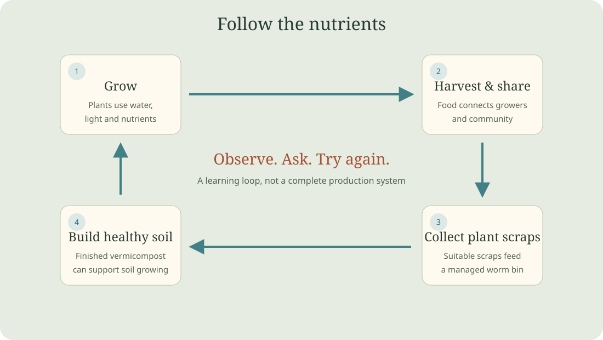
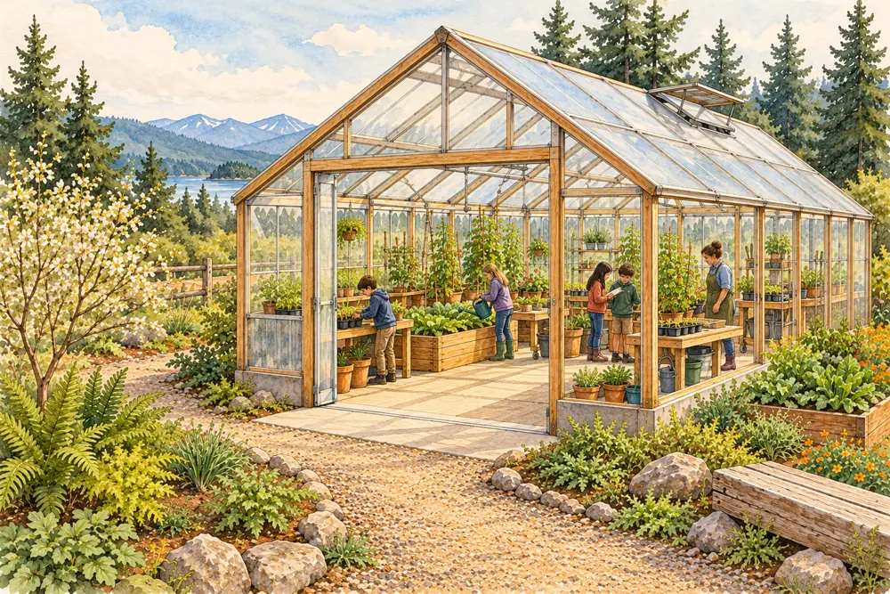
A small greenhouse could offer hands-on learning before a larger campus exists. The school pilot is an exploratory proposal. Cascade School District permission is required before construction or school-based implementation.
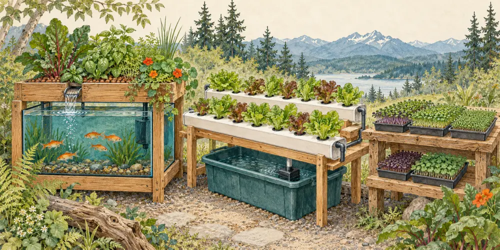
Compare fish-and-plant systems, water-based growing and small microgreen trials. Each could connect biology, measurement and observation with growing food. No system has been selected.
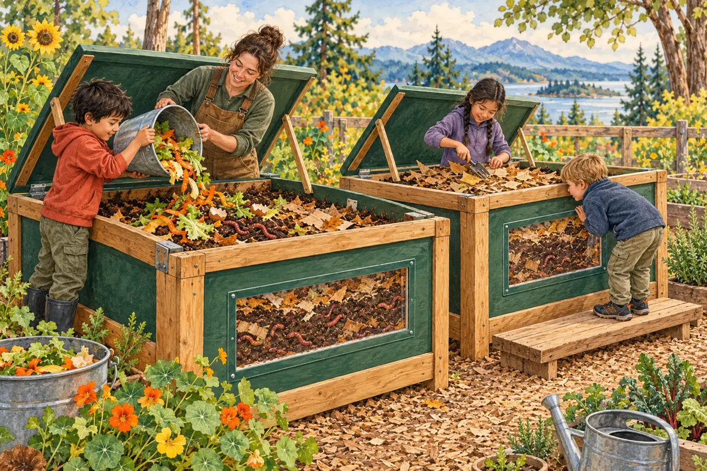
A worm bin could connect food scraps, decomposition and soil health. Follow nutrients from the kitchen to the garden and back again.
Design inspiration: Worms R Us school and commercial worm farms ↗, including viewing-window and step-access ideas. This is an independent Rooted illustration, not an exact product design, endorsement or confirmed purchase.
Stream 03
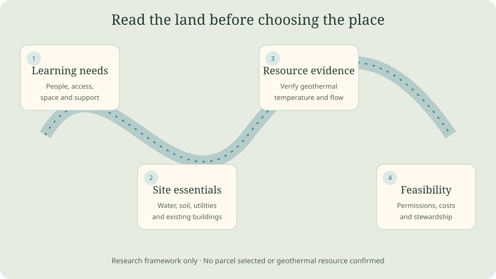
Create a property comparison around learning needs: usable space, water, soils, access, existing buildings, utilities, affordability and long-term stewardship. No parcel is presented as secured or verified.
Explore whether a property’s geothermal hot-water resource could support greenhouse or aquaculture heating. Direct-use heat and ground-source heat pumps are different options; a listing alone does not establish feasibility.
DOE: geothermal direct use ↗Stream 04
Does one growing area stay warmer than another?
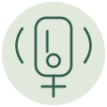
Measure conditions with a suitable supervised sensor or a simple thermometer.
Log readings and compare patterns. Trial software only if it helps the task.
Choose a small change, observe again and share what happened.
A sample learning investigation—not an installed monitoring system. Software candidates remain under research.
LiteFarm, Tend, Seedtime, Farmbrite and farmOS are candidates for research. No subscription, platform choice or integration has been approved.
LiteFarm ↗ · Tend ↗ · Seedtime ↗ · Farmbrite ↗ · farmOS ↗Learners could investigate temperature, moisture and water conditions, then build simple displays or test automation ideas.
Stream 05
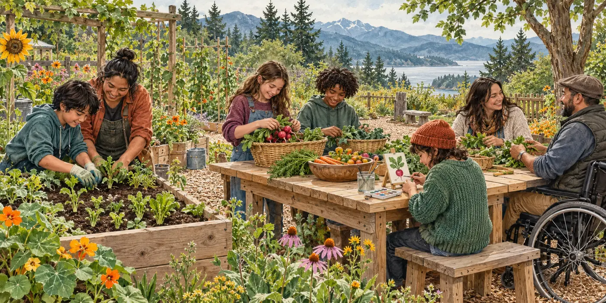
Tend seedlings, observe plants or help with a care routine.
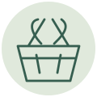
Sort a harvest, label materials or help plan a community activity.
Make signs, tell the story, document discoveries or welcome visitors.
Work with others, adapt tasks and help make participation accessible.
Roles should be chosen with learners and their support networks. These are possibilities, not confirmed jobs or placements.
Imagine flexible ways to participate through growing, cooking, making, animal care, technology and service, shaped around people’s strengths, interests and support needs.
A farm stand, seedlings, microgreens, prepared food or creative products could connect real work with budgeting, communication and service. These are enterprise concepts, not operating businesses.
Stream 06
Something we might explore. No commitment is implied.
Gather evidence about fit, resources, needs and constraints.
Draft a scope and next steps. This does not grant permission to launch.
Document the decision, permissions, scope and conditions before proceeding.
Current hub: no approvals are documented. The school greenhouse still requires Cascade School District permission. Research may lead us to revise or set aside an idea.
Draft a manageable pilot around one learning question and one growing activity. Keep the larger vision open while learning from a small test.
Use this hub to distinguish discoveries from commitments. No approvals are documented yet; the Approved filter will remain empty until there is evidence.
04 / Experiences · Draft learning pathway
From Seed to Community is a proposed Food Systems Lab. Timing, age adaptations, staffing, resources and approvals remain to be worked out. Learners can follow their questions and change direction.
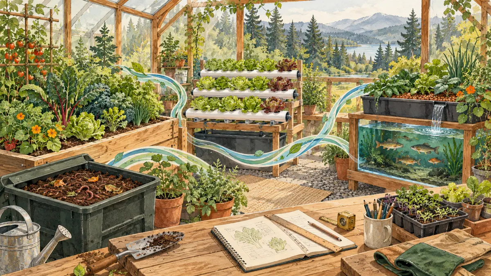
Inspired in part by IFAD’s environment, natural resource management and climate e-learning. This sequence is an independent Rooted adaptation, not an IFAD curriculum or endorsement.
05 / Confluence
Growing can meet engineering. Compost can meet enterprise. Art can help tell the story of food. Bring experiences together without requiring everyone to follow the same route.
Explore what is in season and how it was grown.
Consider quantities, costs, access, preparation and coordination.
Create an invitation, describe the food story and gather reflections.
One illustrative shared project—not a scheduled event. Different learners can contribute in different ways.
06 / Contribution
A harvest, a useful experiment, a community meal, a design, a story, or a clearer question. Contribution can take many forms, and belonging comes before productivity.
Room to belong. Room to become.
Something grown and shared with care.
A design, repair, tool or experiment that helps someone.
A story, demonstration or observation others can learn from.
A clearer understanding of what to explore next.
These are possible outcomes. Belonging does not depend on producing something.
Our field journal / Crystal & Amontae
As we tour, research and experiment, our own photographs will bring this landscape to life. Each field note can hold a moment, what caught our attention, what we learned and the question we want to follow next.
These describe the evidence in a note. Project stages—Inspiration, Research, Planned and Approved—are recorded separately. A visit or photograph does not imply a partnership, permission or approved project.
No field photographs have been added yet. This space is ready for our first tour, small experiment or moment of inspiration.
For each photo: what we saw or did · when · what inspired us · what we might explore next.
Share a selection of photos in this chat with a short note about the visit or activity. Include the date, what we’re seeing, what inspired you and any question or next step. Say which images you want published. We can add them here and connect them to the relevant discovery stream.
Only include location details you want public. Choose photos you have permission to publish, especially when other people or school activities are pictured. Updates are added through the website source; this page does not upload photos automatically.
From our original scrapbook
Original artwork preserved. These are concept boards: pictured spaces and buttons are illustrations. Sample “Now Enrolling” wording in the artwork does not represent open enrollment.
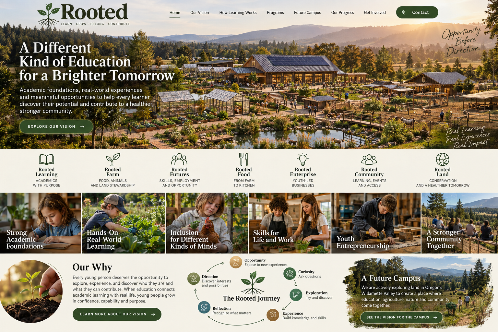
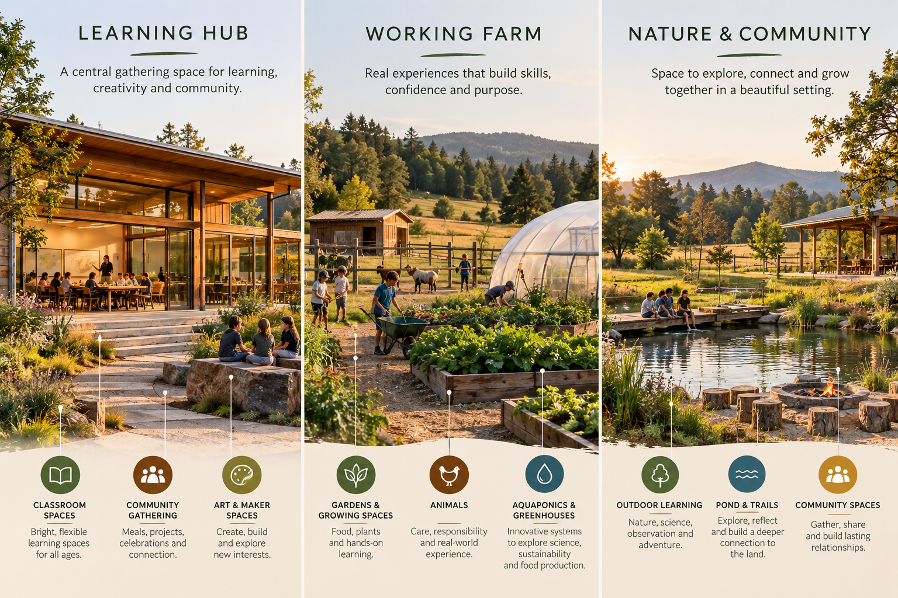
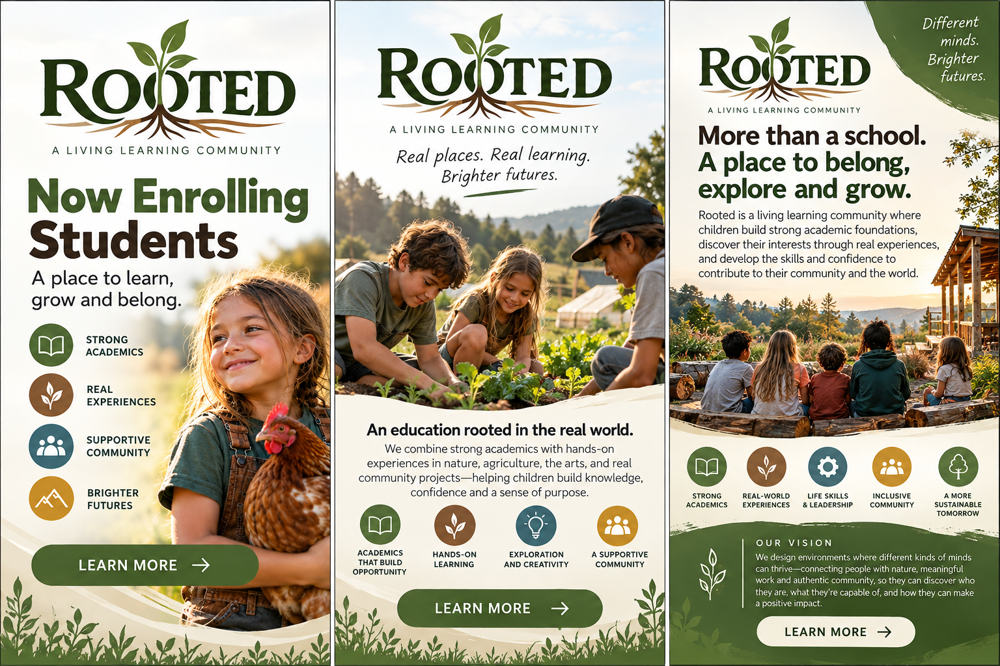